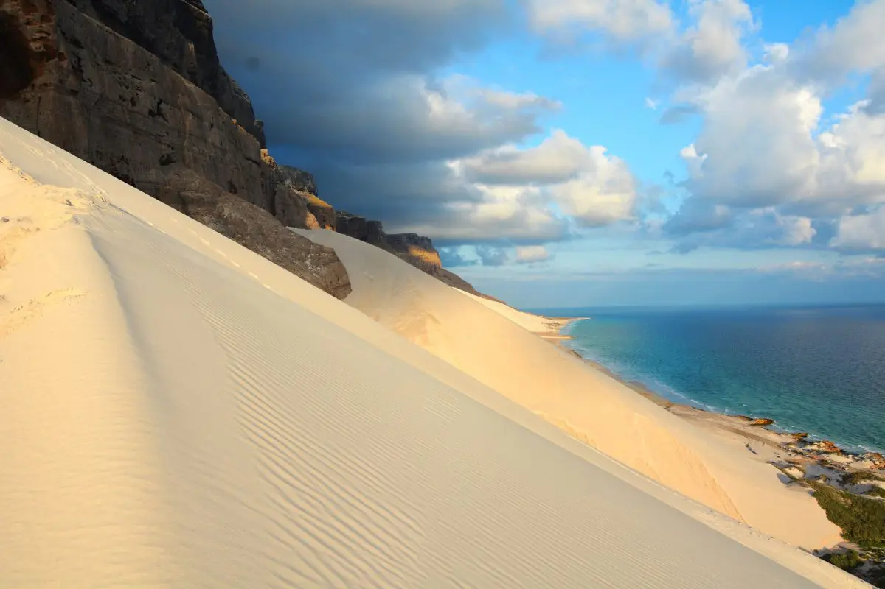

Ciekawe miejsca
Od zawsze dużo podróżuje. Kultura państw śródziemnomorskich jest c dla mnie niezwykle ciekawym tematem. Podejście do życia, ludzi mieszkających w tym regionie odbiega od naszego, co jest niesamowicie fascynujące. Ludzie są dla siebie mili, nikt się nie spieszy a życie toczy się powoli. Kuchnia śródziemnomorska jest świetna, różne makarony i owoce morza to najlepsze co można przygotować.
Jednakże nie tylko europejska kultura jest warta uwagi. Wartości oraz sposób życia Lankijczyków jest zupełnie odmienny ale równie ciekawy. Mieszkańcy mają inne cele i wartości ale pozostają przy tym mili, a swoją pracę traktują z ogromnym szacunkiem. Żyją w zupełnie innych warunkach niż my, co mocno rzuca się w oczy. Przerazająca jest różnica w skali brudu, coś co dla nas jest niezdatne do użycia dla nich może być tylko lekko brudne.
Równie odmienna kultura jest w Malezjii, co zaskakujące w kranach nie ma ciepłej wody a Malezyjczycy kąpią się od małego w zimnej wodzie. Myślę że dla Europejczyków jest to nie do pomyślenia. Pogoda często nie sprzyja ponieważ temperatura nie schodzi poniżej 38 stopni, dlatego ludzie często używają parasoli przeciwsłonecznych.Kolejnym nietypowym faktem jest to że na Hiszpańskiej wyspie - Fuentaventurze mieszka więcej kóz niż tubylców. Większą część wyspy pokrywają Kurorty i hotele do których przyjeżdzają turyści.
Makaron azjatycki jest sehr lecker, aber italian pasta ist besser. Ich bin in Italy i włoskie lody są naprawdę dobre. Ładne koty chodzą po Rzymie
Świat jest pełny ciekawych miejsc, które wrto odwiedzić. Uważam, że w swoim życiu warto zobaczyć zarówno wielką piątkę w Kenii jak i ogromne baobaby na Madagaskarze. Podróże kształcą więc warto w nie inwestować. Ludzie często ograniczają się tylko do Europy, co jest ogromną stratą ponieważ Afryka czy Australia dysponują pięknymi oraz nieodkrytymi plażami i widokami. Kiedy jesteś młody świat czeka aby go zwiedzi. Brak pieniędzy nie jest problemem ponieważ wiele kierunków nie wymaga wygórowanych kwot aby miło spędzić czas. Takim kierunkiem z pewnością jest Tunezja w której panuje co prawda specyficzny, ale bardzo ciepły klimat. Koszt życia na własną rękę przez miesiąc nie przekroczy 10k złotych a pozostawi wspaniałe wspomnienia.